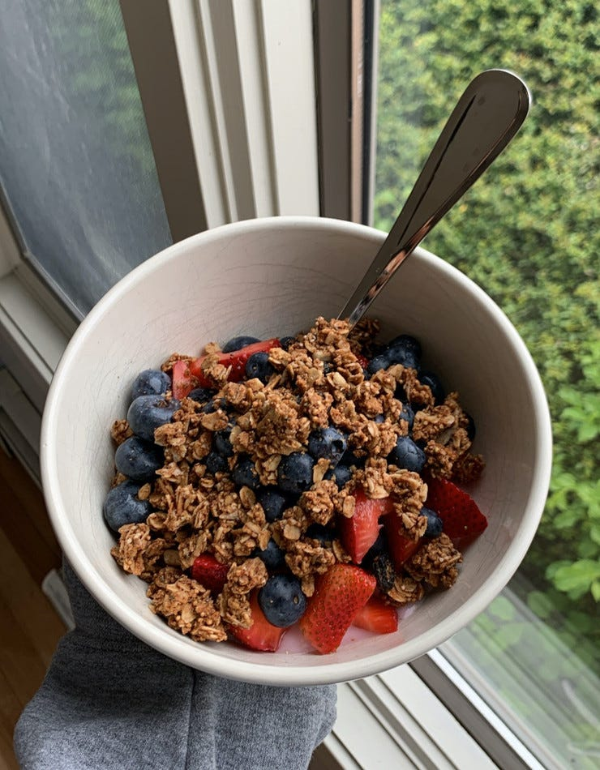
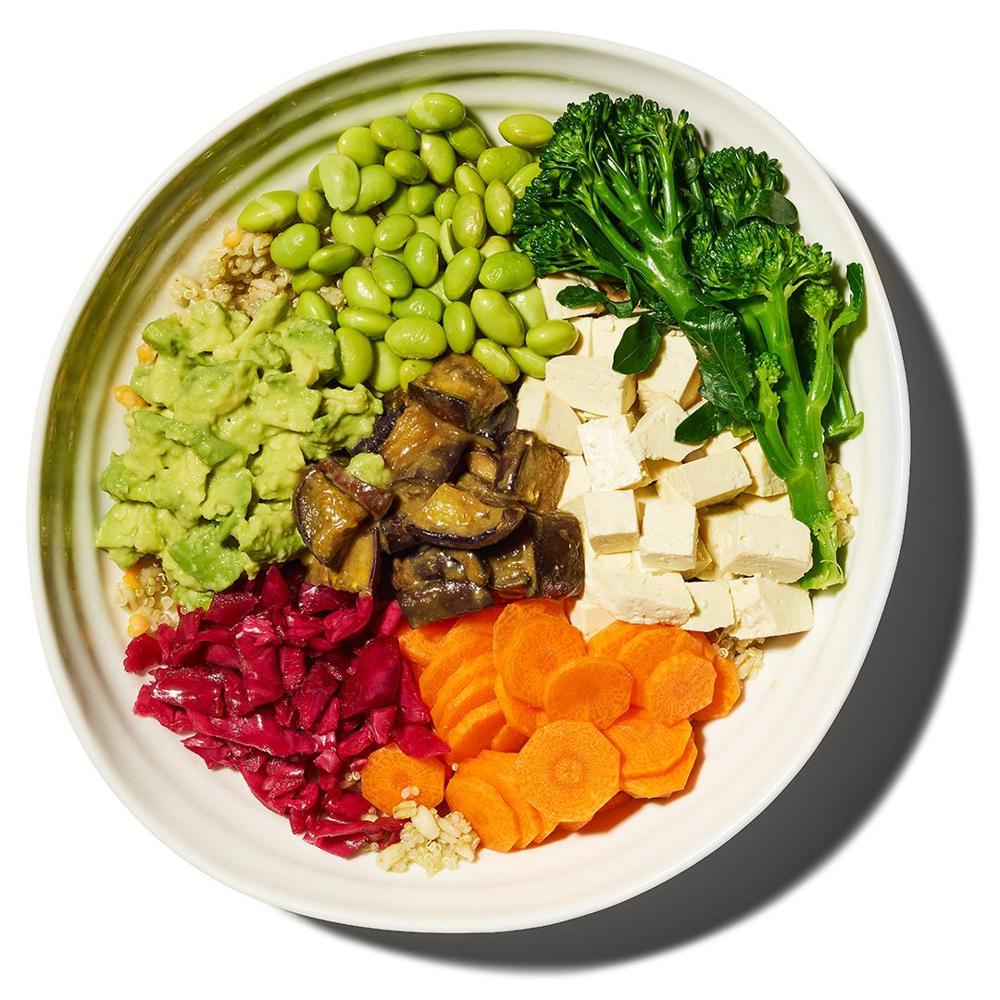
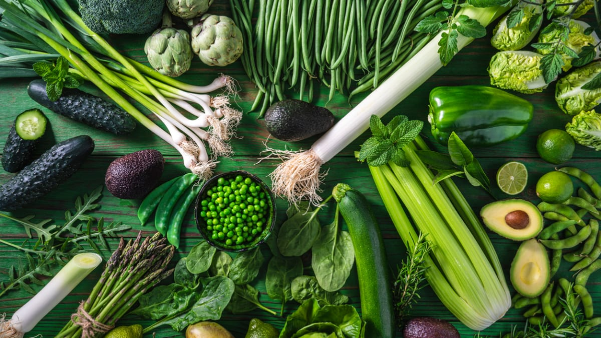

Plant based nutrition
Preworkout
Cutting
High Protein
Preworkout meals loaded with carbs
Preworkout meal is the most important meal of the day. It fuels your training, provides amino-acids and jump starts your regeneration.


Low calorie meals
Your meals while cutting are going to be much different to what you eat normally. Volume eating, while maximizing protein intake is going to be key to success.
Plant based protein dinners
Consisency is going to be the most important in building muscle. That's why it is smart to have a rotation of multiple high-protein meals in your diet.
